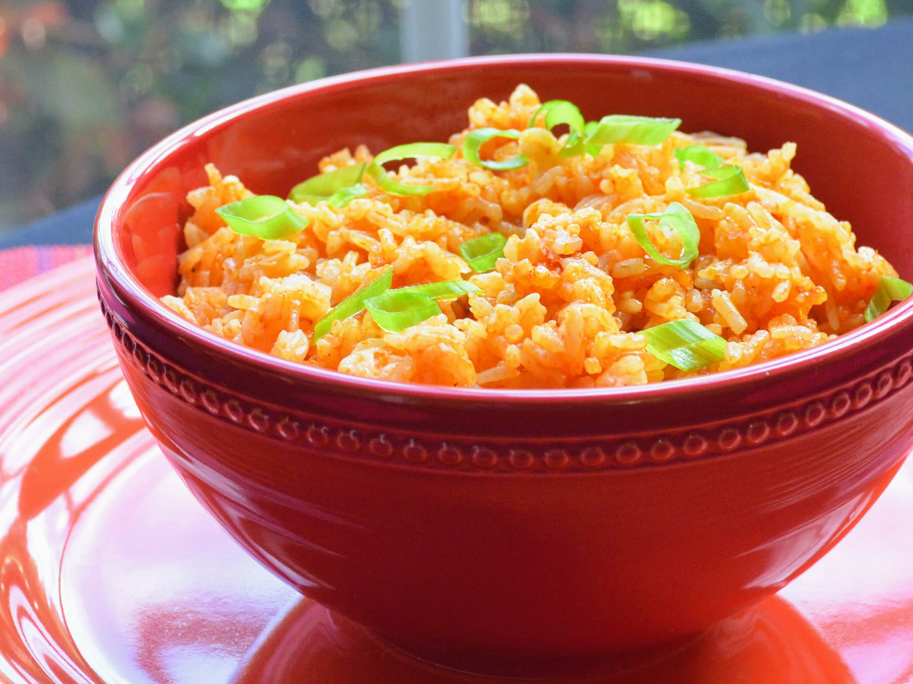

Instant Pot Mexican Rice
Make Spanish rice in an Instant Pot for a wonderful side dish for any Mexican meal.
Recipe by Victor Varbanov, credits to allrecipes.com

- Prep: 10 mins
- Cook: 20 mins
- Additional: 5 mins
- Total: 35 mins
- Servings: 4
Ingredients
- 1 tablespoon avocado oil, or more as needed
- ½ medium onion, finely chopped
- 2 large cloves garlic, minced
- 1 cip long-grain rice
- 1 ½ cups low-sodium chicken stock
- ½ cup tomato sauce
- 1 teaspoon salt
- ¼ teaspoon ground cumin
- 1 pinch cayenne pepper
Steps
- Step
Turn on a multi-functional pressure cooker (such as Instant Pot); select sauté function and adjust to medium.
- Step
Cover the bottom of the pot with avocado oil. Cook and stir onion until soft, 4 to 5 minutes. Add garlic and cook until fragrant, about 30 seconds.
- Step
Add rice to the pot; mix until coated with oil and lightly browned. Pour in chicken stock; stir any browned bits off the bottom of the pot. Mix in tomato sauce, salt, cumin, and cayenne pepper.
- Step
Close and lock the lid. Seal the vent and select high-pressure function. Set a timer for 7 minutes; allow 10 to 15 minutes for pressure to build.
- Step
Release pressure carefully using the quick-release method according to the manufacturer's instructions, about 5 minutes. Unlock and remove the lid. Stir rice before serving.